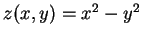
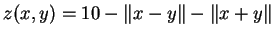

La evaluación de este curso consiste en una serie de ejercicios prácticos sobre cada módulo en el que te hayas matriculado, que pasamos a describir en los correspondientes apartados . Los resultados deberán entregarse antes del día 15 de Octubre. Hasta esa fecha se podra disponer de las cuentas en las aulas de la Facultad de Matemáticas (planta 5). para que hagas las prácticas allí mismo si no tienes otro sitio. El horario de apertura depende de la disponibilidad de becarios y estará pegado en la puerta.
Ten cuidado de no restrasarte, pues la cuenta de usuario que has recibido para el curso caduca justo el día 15 de Octubre, y puede que necesites que tu cuenta funcione para enviarnos el material. Si por algún motivo has perdido tu cuenta, tu contraseña o no tienes cuenta en absoluto avísalo a miguev@fmat.ull.es
La entrega se realizará mediante un correo electrónico que debes enviarnos a cila@fmat.ull.es con las soluciones de los ejercicios que encontrarás a continuación, en forma de ficheros de texto adjuntos.
Organiza las respuestas de la siguiente forma:
$ tar cfz IvanGoni.tar.gz IvanGoni/
Si no has hecho el módulo I, puedes enviarlo usando el webmail de la facultad situado en http://www.fmat.ull.es/correo/ o bien cualquier cliente de correo de código abierto (mozilla mail, evolution, mutt, pine). No se admitirán correos enviados con programas propietarios como Outlook o Eudora.
Si has hecho el módulo I revisa la sección correspondiente a ese módulo pues tienes que hacerlo de la forma que vimos en clase, utilizando mutt o evolution. Subirá nota utilizar mutt.
Es imprescindible entregar todos los ficheros en formatos libres y abiertos y escribir los ficheros de texto en Linux. En caso de que no lo hagas así nos daremos cuenta y tus respuestas no serán válidas.
Damos por sentado que si eres capaz de crear los directorios y empaquetarlos como te decimos al principio, entonces posees los conocimientos mínimos para pasar este tema.
Subirá nota si en lugar de comprimir el paquete tar con gzip lo comprimes con bzip2, tal como dijimos en clase, o bien consultando cómo hacerlo en la página de manual de tar.
Navega con algún navegador de los vistos en este módulo (galeon, mozilla, netscape o konqueror) y crea una colección de al menos 10 marcadores (bookmarks) organizados en carpetas. Para darnos tus marcadores envíanos el fichero .netscape/bookmarks.html, .mozilla/*/*.slt/bookmarks.html, .galeon/bookmarks.xbel o .kde/share/apps/konqueror/bookmarks.xml según utilices el navegador netscape, mozilla, galeon o konqueror respectivamente. Valoraremos la organización de los marcadores y las especificidades (p.ej: marcadores inteligentes de galeon).
Aparte de eso, recordarte que el correo debes enviarlo usando un cliente libre de correo de los vistos en clase (o el que tengas configurado). No deberías tener dificultad en enviarlo utilizando Evolution. Se valorará el cliente utilizado para enviar el correo. Por ejemplo, si quieres subir nota, podrás usar mutt desde el servidor galois.fmat.ull.es (al cual accederás vía SSH). Todo eso lo comprobaremos en el correo que nos envíes.
Resume (sin entrar en detalles) la instalación de Debian GNU/Linux que hiciste en tu ordenador: cómo preparaste el ordenador para la instalación, qué software instalaste, cómo configuraste el kernel para que soportara tu hardware, problemas que tuviste, etc.
Elije al menos una de las siguientes opciones:
Subirá nota hacer más de una de estas opciones, o hacerla(s) utilizando técnicas gráficas que no hayas aprendido en el curso.
Escribe un fichero HTML que contenga un resumen de los ficheros que
nos entregas. En el fichero HTML el nombre de cada fichero debe
ser un enlace a donde se encuentre este fichero. Por ejemplo,
si los directorios de los módulos se llaman mod1, mod2, etc. en el fichero el enlace debe ser algo como
<a href="../mod4/fichero.txt">fichero.txt</a>
Haz un resumen sobre las capacidades que aprendas sobre OpenOffice, poniendo como mínimo una estructura básica al documento y alguna figura o tabla. Subirá nota incluir una referencia cruzada o un índice. El fichero debe estar en formato de OpenOffice (.sdw)
Haz un resumen sobre las capacidades que aprendas sobre LYX, poniendo como mínimo una estructura básica al documento y alguna referencia cruzada. Subirá nota incluir una tabla, un gráfico o un índice.
Haz un resumen sobre las capacidades que aprendas sobre LATEX, poniendo como mínimo una estructura básica al documento y alguna expresión matemática. Subirá nota incluir una tabla, un gráfico o un índice.
Haz un script que dibuje, con un plot, un círculo de radio unitario.
Para ello presenta
 (la positiva y la
negativa), en el intervalo
(la positiva y la
negativa), en el intervalo
 y superpuestas en la
misma gráfica.
y superpuestas en la
misma gráfica.
Si quieres subir nota, presenta en otro script las funciones  y , en este caso, en dos gráficas una junto a la otra en la misma ventana (subplot).
Recuerda utilizar la versión 2.1 de octave para seguir los ejemplos del libro ejecutando octave2.1.
Genera una muestra de 50 números aleatorios que sigan una distribución normal con media y varianza aleatorias. Haz una descripción estadística de la muestra incluyendo la media, la mediana y los cuartiles. Representa la muestra gráficamente mediante un histograma.
Si quieres subir nota, haz un contraste de hipótesis a la muestra para contrastar si la media aritmética muestral es una estimación aceptable de la media con la que generaste la muestra. Recuerda que este contraste requiere un test de normalidad. Ayúdate de los gráficos Q-Q (cuartil-cuartil) y represéntala en un diagrama de sectores por intervalos utilizando los cuartiles como extremos de los intervalos.
Debes introducir los comandos necesarios para esto en un script (fichero de texto script.R) y adjuntárnoslos. Los gráficos no es necesario que nos los adjuntes, ya que deben ser generados por el script.
Escribe un script en Yacas (script.ys) que genera una serie de 6 puntos aleatorios en , calcule el interpolante de Lagrange para esa nube de puntos y la represente mediante GNUplot. No adjuntes el gráfico, ya que el script debe generarlo.
Si quieres subir nota esribe una función que dado un polinomio y un intervalo en el que sabes que ese polinomio sólo tiene una raíz, la aproxime mediante algún método iterativo.
Escribe un Makefile que compile al menos un ejemplo en cada lenguaje (Pascal, Fortran, C, C++) de los ejemplos de código que incluye el libro. Recuerda que estos ejemplos puedes obtenerlos en http://cila.gulic.org/ejemplos.php comprimidos en un fichero ejemplos.tar.gz que puedes descomprimir con el comando
$ tar xfz ejemplos.tar.gz
Añadir un objetivo clean que borre los ejecutables y objetos resultantes de la compilación.
Para subir nota, separar las compilaciones de los distintos programas (ejemplos de código) para que se puedan compilar por separado. Esto se hace definiendo un objetivo para cada ejemplo, y haciendo depender el objetivo all de todos ellos.
Escribe un script en Bash que muestre información sobre un usuario especificado. El script debe:
Si quieres subir nota escribe un script que muestre información acerca de cada uno de los directorios especificados en la línea de comandos. El script debe:
This document was generated using the LaTeX2HTML translator Version 2K.1beta (1.48)
Copyright © 1993, 1994, 1995, 1996,
Nikos Drakos,
Computer Based Learning Unit, University of Leeds.
Copyright © 1997, 1998, 1999,
Ross Moore,
Mathematics Department, Macquarie University, Sydney.
The command line arguments were:
latex2html -split 0 preguntas
The translation was initiated by Miguel Ángel Vilela García (Debianita) on 2002-09-29